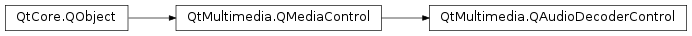

QAudioDecoderControl¶
Detailed Description¶
The
PySide2.QtMultimedia.QAudioDecoderControlclass provides access to the audio decoding functionality of aPySide2.QtMultimedia.QMediaService.The functionality provided by this control is exposed to application code through the
PySide2.QtMultimedia.QAudioDecoderclass.The interface name of
PySide2.QtMultimedia.QAudioDecoderControlisorg.qt-project.qt.audiodecodercontrol/5.0as defined inQAudioDecoderControl_iid().
-
class
PySide2.QtMultimedia.QAudioDecoderControl([parent=nullptr])¶ Parameters: parent – PySide2.QtCore.QObjectConstructs a new audio decoder control with the given
parent.
-
PySide2.QtMultimedia.QAudioDecoderControl.audioFormat()¶ Return type: PySide2.QtMultimedia.QAudioFormatReturns the current audio format of the decoded stream.
Any buffers returned should have this format.
-
PySide2.QtMultimedia.QAudioDecoderControl.bufferAvailable()¶ Return type: PySide2.QtCore.boolReturns true if a buffer is available to be read, and false otherwise.
-
PySide2.QtMultimedia.QAudioDecoderControl.bufferAvailableChanged(available)¶ Parameters: available – PySide2.QtCore.bool
-
PySide2.QtMultimedia.QAudioDecoderControl.bufferReady()¶
-
PySide2.QtMultimedia.QAudioDecoderControl.duration()¶ Return type: PySide2.QtCore.qint64Returns total duration (in milliseconds) of the audio stream or -1 if not available.
-
PySide2.QtMultimedia.QAudioDecoderControl.durationChanged(duration)¶ Parameters: duration – PySide2.QtCore.qint64
-
PySide2.QtMultimedia.QAudioDecoderControl.error(error, errorString)¶ Parameters: - error –
PySide2.QtCore.int - errorString – unicode
- error –
-
PySide2.QtMultimedia.QAudioDecoderControl.finished()¶
-
PySide2.QtMultimedia.QAudioDecoderControl.formatChanged(format)¶ Parameters: format – PySide2.QtMultimedia.QAudioFormat
-
PySide2.QtMultimedia.QAudioDecoderControl.position()¶ Return type: PySide2.QtCore.qint64Returns position (in milliseconds) of the last buffer read from the decoder or -1 if no buffers have been read.
-
PySide2.QtMultimedia.QAudioDecoderControl.positionChanged(position)¶ Parameters: position – PySide2.QtCore.qint64
-
PySide2.QtMultimedia.QAudioDecoderControl.read()¶ Return type: PySide2.QtMultimedia.QAudioBufferAttempts to read a buffer from the decoder, without blocking. Returns invalid buffer if there are no decoded buffers available, or on error.
-
PySide2.QtMultimedia.QAudioDecoderControl.setAudioFormat(format)¶ Parameters: format – PySide2.QtMultimedia.QAudioFormatSet the desired audio format for decoded samples to
format.If the decoder does not support this format,
PySide2.QtMultimedia.QAudioDecoderControl.error()will be set toFormatError.If you do not specify a format, the format of the decoded audio itself will be used. Otherwise, some format conversion will be applied.
If you wish to reset the decoded format to that of the original audio file, you can specify an invalid
format.
-
PySide2.QtMultimedia.QAudioDecoderControl.setSourceDevice(device)¶ Parameters: device – PySide2.QtCore.QIODeviceSets the current source to
device. Changing the source will stop any current decoding and discard any buffers.Sources are exclusive, so only one can be set.
-
PySide2.QtMultimedia.QAudioDecoderControl.setSourceFilename(fileName)¶ Parameters: fileName – unicode Sets the current source to
fileName. Changing the source will stop any current decoding and discard any buffers.Sources are exclusive, so only one can be set.
-
PySide2.QtMultimedia.QAudioDecoderControl.sourceChanged()¶
-
PySide2.QtMultimedia.QAudioDecoderControl.sourceDevice()¶ Return type: PySide2.QtCore.QIODeviceReturns the current media source
PySide2.QtCore.QIODevice, or 0 if none (or a file).
-
PySide2.QtMultimedia.QAudioDecoderControl.sourceFilename()¶ Return type: unicode Returns the current media source filename, or a null
PySide2.QtCore.QStringif none (or a device)
-
PySide2.QtMultimedia.QAudioDecoderControl.start()¶ Starts decoding the current media.
If successful the player control will immediately enter the
decodingstate.
-
PySide2.QtMultimedia.QAudioDecoderControl.state()¶ Return type: PySide2.QtMultimedia.QAudioDecoder.StateReturns the state of a player control.
-
PySide2.QtMultimedia.QAudioDecoderControl.stateChanged(newState)¶ Parameters: newState – PySide2.QtMultimedia.QAudioDecoder.State
-
PySide2.QtMultimedia.QAudioDecoderControl.stop()¶ Stops playback of the current media and discards any buffers.
If successful the player control will immediately enter the
stoppedstate.
© 2018 The Qt Company Ltd. Documentation contributions included herein are the copyrights of their respective owners. The documentation provided herein is licensed under the terms of the GNU Free Documentation License version 1.3 as published by the Free Software Foundation. Qt and respective logos are trademarks of The Qt Company Ltd. in Finland and/or other countries worldwide. All other trademarks are property of their respective owners.